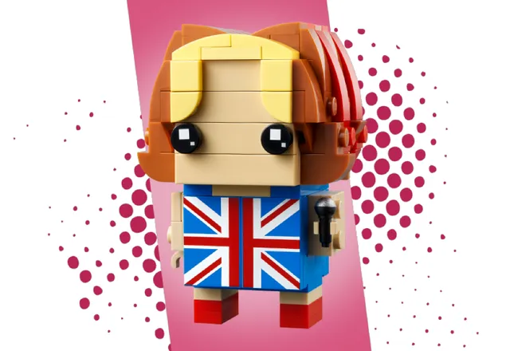
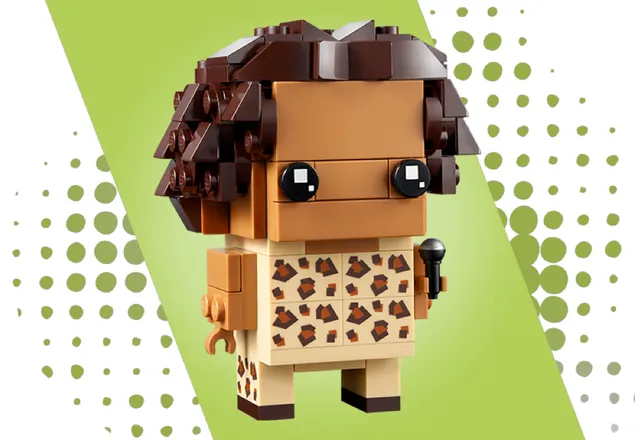
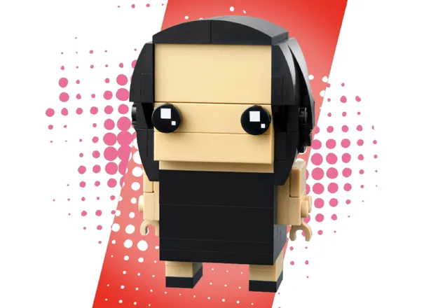
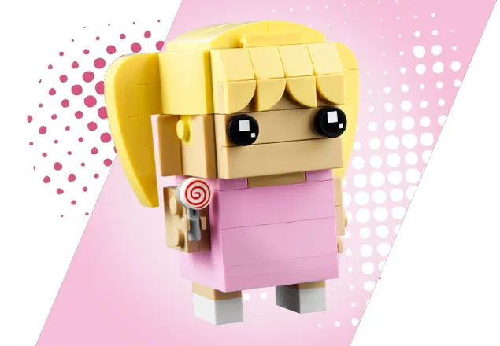
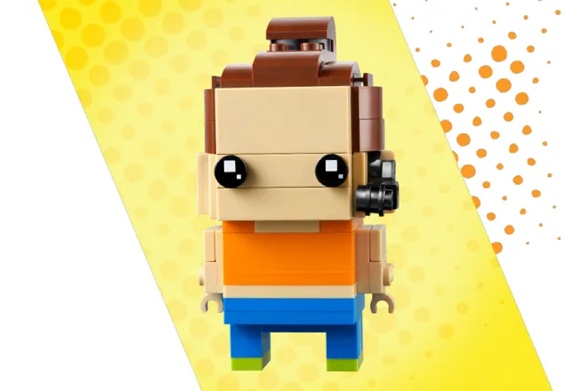

Spice Girls
Introducción
Spice Girls son una banda británica de música pop fundada en 1994 y compuesta por las cantantes Geri Halliwell, Melanie C, Victoria Beckham,Melanie B y Emma Bunton. Con más de 100 millones de discos certificados vendidos, son el grupo femenino más exitoso de la historia de la música y uno de los actos musicales más influyentes durante de la década de los 90. Son consideradas una de las bandas mas emblematicas de la historia, debido a su impacto, legado, récords e impacto cultural.
Llevaron a cabo su carrera entre 1996 y 2001, 2007 y 2008, una aparición en 2012 durante la clausura de los Juegos Olímpicos de Londres 2012, y finalmente entre 2018 y 2019 con una nueva gira, Spice World Tour 2019, ya sin Victoria Beckham.
Integrantes
Geri Halliwell
 Ginger SpiceGeraldine "Geri" Estelle Horner, también conocida como Ginger Spice, es una cantante pop, escritora, actriz y filántropa británica, miembro del popular grupo Spice Girls. Tras su paso por la agrupación, Geri lanzó su carrera en solitario y debutó con su primer álbum solista, Schizophonic en 1999.
Melanie Brown
 Scary SpiceMelanie Janine Brown, también conocida como Mel B, Melanie B o 'Scary Spice', es una cantante de pop británica miembro del popular grupo femenino Spice Girls. Tiene orígenes ingleses y jamaiquinos. En 2019 inició una nueva gira con Spice Girls.
Victoria Beckham
 Posh SpiceVictoria Caroline Adams conocida como Victoria Beckham, es una diseñadora de moda, empresaria y cantante británica. Integró el grupo Spice Girls en el que usó el apodo de Posh Spice. Desde 1999 está casada con el exfutbolista David Beckham.
Emma Bunton
 Baby SpiceEmma Lee Bunton es una cantante, compositora, presentadora, actriz y modelo británica. Miembro del famoso grupo británico Spice Girls, donde es conocida como Baby Spice por ser la más joven del quinteto británico.
Melanie Chisholm
 Sporty SpiceMelanie Janine Brown, también conocida como Mel B, Melanie B o 'Scary Spice', es una cantante de pop británica miembro del popular grupo femenino Spice Girls. Tiene orígenes ingleses y jamaiquinos. En 2019 inició una nueva gira con Spice Girls.